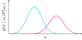

minimises the probability of error; it needs the class-conditional densities and the prior probabilities, and gives the discriminants .
minimises the probability of error; it needs the class-conditional densities and the prior probabilities, and gives the discriminants .Statement
Bayes' theorem: , . Decision rule (MAP):
Among all rules, it has the minimum probability of error .Derivation
A rule with regions  is correct with probability . To maximise it, each should lie in the region whose integrand is largest at , which is the MAP rule. With equal priors it reduces to maximum likelihood.
is correct with probability . To maximise it, each should lie in the region whose integrand is largest at , which is the MAP rule. With equal priors it reduces to maximum likelihood.
Picture

The threshold sits where the weighted densities cross, shifted towards the less probable class.
Intuition
Pick the most believable explanation of the pixel, weighing how typical the measurement is for each class and how common each class is.
Pitfall
Priors matter: estimating them from the training set, where classes are sampled in arbitrary proportions, biases the map; and the rule is only as good as the estimated densities.